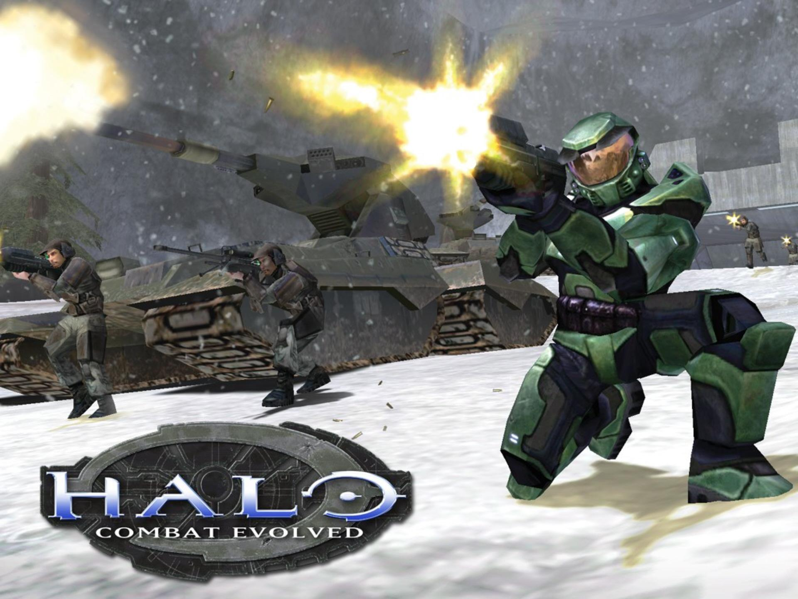
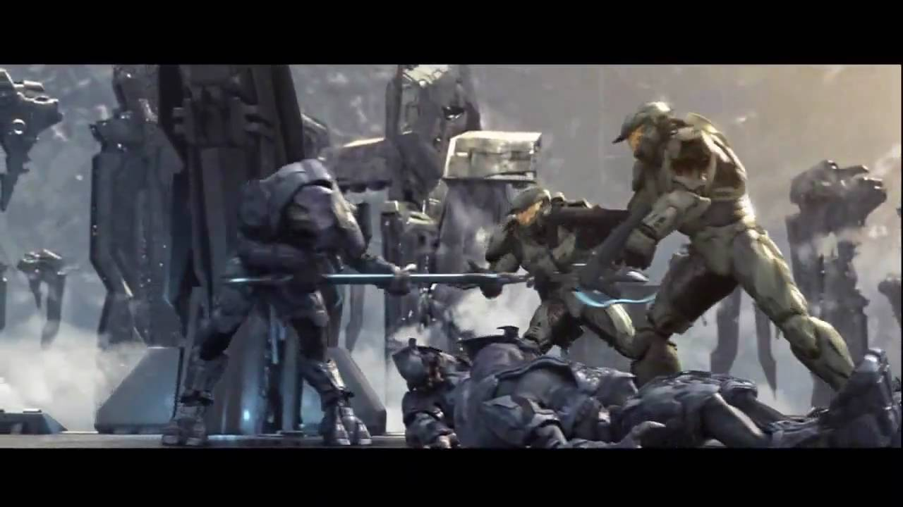

The name Halo should almost certainly sound familiar, as it's title befits a game that defined generations of games and people who played them. It wasn't until halo in which the popularity of shooters skyrocketed and remains to this day a saving grace to xbox.
For years halo has given us some of our best experiences of Xbox, having existed since the original Xbox, Unbeknownst to few Halo was the first game to use the right stick to look in chosen directions and almost immediately did this catch on, creating games such as Call Of Duty, Destiny, Team Fortress, and many more games we know and love thanks to Halo.
Since the beganning halo has been known for its in depth story that comes with its campaign.
The game is set about 5-6 centuries in the future, where humanity has greatly developed in its technology, and has spread widely across the galaxy. Recently in halos history, humanity's military (UNSC) began experimenting with Advanced Augmentation and armors, Referring to it as project mjolnir also known as the spartan project. These experiments initially involved kidnapping children and turning them into killing machines. Then when they come of age they begin the augmentation, where many of the children die, those that survive immediately gain extreme levels of strength, durability,speed and reflexes.
The children (now called spartans) would train for several more years, then they are outfitted with the most advanced exosuits known to man weighing around 2 metric tons. After just a bit more testing they are released into the field where the spartans original purpose was to root out rebels, but several years after the first set of spartans were made, The Covenant arrived...
Click here for more information on the covenant.

The covenant is a ruthless order of aliens that immediately began to burn human worlds. They follow their leaders called prophets that promise to their people they'd go on "the great journey" to ascend to godhood. The covenant believed that the forerunners, an ancient and advanced alien race that's long gone extinct, were in themselves gods and that if they followed in their steps they too would ascend. Little did they know this plan was all hot air, because what actually happened to the forerunners was that they built and activated the halo rings which erase all life within a massive radius.
The reason for the covenant's violent assault on humanity is because the humans are the rightful heirs to the forerunner's power, and the prophets want the power for themselves. At this point we are in the events of the first game and the spartans became the thing that stood between humanity and annihilation.
click here for a full summarySo now you know the premise of halo, The games put you in the shoes of spartan john 117 (a literary allusion to the bible), one of, if not, the best of the best, where you are taken all over the universe in attempt to stop the covenant from activating the halo rings
As you fight for humanity the game continues to keep you on your toes as it adds more and more to threaten you. The enemy forces the player to engage as different enemies not only have different AI but also have varying intelligence causing the player to think, and to strategize more. further in the game you faced with more factions one being an alien bio plague set on corrupting everything until only it exists, and the remaining forerunner machines that were left unattended for millenia!
As you may be wondering if the campaign is so good what about the rest of the game? Well the halo games were even more played for its multiplayer where the players own spartan is barred againced other spartains in skilled gameplay even before they added sprint. Halos multiplayer style was made to be balenced to the point where a brand new player would have the same advantages as a player whos played for years, emphasizing skill and making the game fun for everyone! Thats not all because the makers